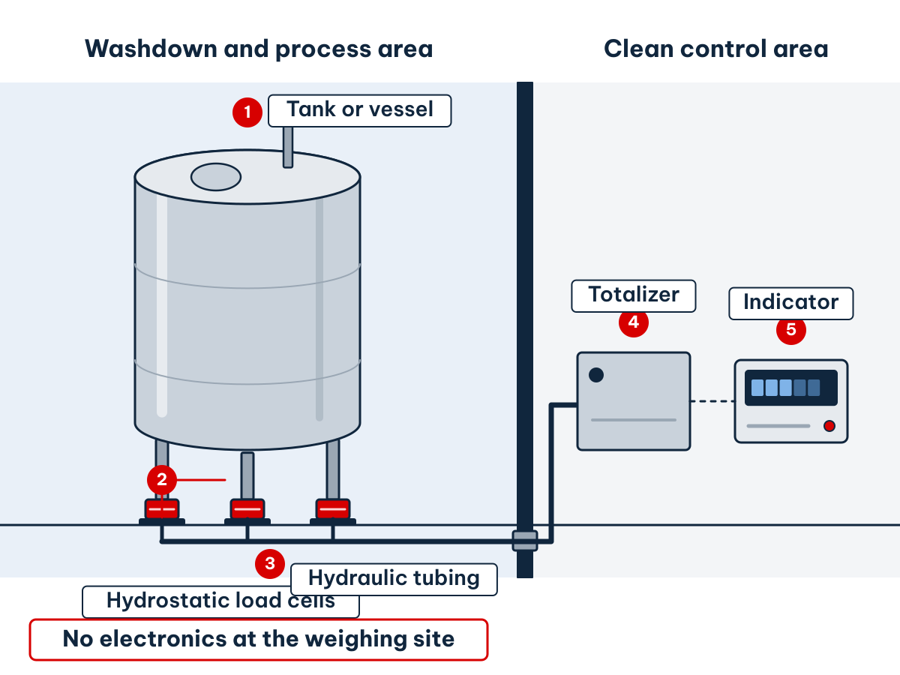

過酷環境
静圧式と電子式ロードセル：2つの計量システムの比較
同じタンク、同じ支持台——計量方法は2通りあります。スケッチ1は電子式システム、スケッチ2は静圧式システムを示します。何が変わり、過酷環境でそれが何を意味するかを説明します。

複数ロードセル計量システムの役割は、どちらのスケッチでも同じです。受載フレーム上の荷重を計量し、デジタル指示計とプリンターに表示することです。違いは、過酷な屋外環境に何が置かれ、どのような信号が屋内に伝わるかです。スケッチ1は電子式ロードセルの模式図、スケッチ2は Hydrostatic™ 静圧式ロードセルの模式図で、いずれも Emery Winslow Scale 自身によるものです。

信号経路の比較
2つのスケッチを左から右へ読んでください：荷重、セル、信号、指示計です。
| 電子式計量システム（スケッチ1） | 静圧式計量システム（スケッチ2） | |
|---|---|---|
| ロードセル | 受載フレームの下に（2）個以上の電子式ロードセル | 受載フレームの下に（2）個以上の静圧式ロードセル |
| セルからの信号 | 電子信号——各セルから合算ネットワークへのケーブル | 静圧信号——各セルから合算トータライザー（Summing Totalizer）（フォースフレーム）への流体ライン |
| 屋内 | デジタル指示計とプリンター、電子信号で直接駆動 | トランスデューサー（mV出力）が静圧信号を電子信号に変換し、デジタル指示計とプリンターへ送ります |
| 過酷環境に置かれるもの | ひずみゲージ式センサー、ケーブル、合算用電子機器 | 密閉型静圧セルと流体ライン——計測点に電子機器なし |
| 水・落雷・サージが最初に直撃するもの | センサーとその電子機器、まさに荷重のある場所 | 密閉されたセル本体と流体ライン。電子機器は屋内の管理された環境にあります |
| センサーの構造 | 接着された箔ひずみゲージ付き金属ばね要素、ホイートストンブリッジとして配線 | 密閉圧力カプセル：流体で満たされたチャンバー上にピストンとダイヤフラム——電気部品は一切なし |
| ジャンクションボックス（中継端子箱）と配線 | スケール部のジャンクション（合算）ボックス、コーナー調整、指示計へのホームラン信号ケーブル | 合算トータライザー（Summing Totalizer）への流体配管——屋外に電気接続なし |
| セル本体の材料 | 合金鋼またはステンレス鋼。気密シール対応可 | ステンレス鋼（標準は304）、腐食性用途向けに316、チタン、Monel、Hastelloyのオプションあり |
| 日常メンテナンス | 校正とコーナー確認、ボックスとケーブルの点検、過酷用途では計画的なセル交換 | スケール部での作業はわずか。サービスは屋内のトータライザー、トランスデューサー、指示計に集中します |
2つのセンサーの内部
計測要素そのものから始めます。本比較の他のすべては、各セルの構造に起因するためです。
静圧式セル 圧力カプセルです。Emery Winslow の設計では、荷重がピストンにかかり、ピストンがダイヤフラムで閉じられた密閉・流体充填チャンバーを押します。流体内に生じる圧力は荷重に正確に比例し、その圧力——電気信号ではありません——がセルの出力となります。構造は用途により異なります。120 Series は布製ダイヤフラムを使用し、大きな横荷重でセルが損傷しても工場の整備士が交換できます。一方、大型の 136 Series は所定位置に溶接されたステンレス鋼ダイヤフラムを使用します。内部にゲージ、配線、回路基板はなく、メーカーの言葉通り、セルは完全に非電子式です。
電子式セル 計測機器です。機械加工された金属ばね要素が荷重下でわずかに、再現性のあるたわみを生じ、接着された箔ひずみゲージが伸縮に応じて抵抗を変化させ、ホイートストンブリッジがその変化をミリボルト信号に変換します。ゲージ、その接着部、内部配線、ケーブル導入部はすべてセルの一部であり、すべて荷重のある場所——タンクの下、ピットの中、トラックスケール台の下——にあります。
ジャンクションボックスと配線：スケッチが簡略化している点
スケッチ1では電子式システムの合算ネットワークを1つのボックスとして描いています。実際のスケールでは、計量点にある小規模な電気設備です。各セルのケーブルが終端するジャンクション（合算）ボックス、各コーナーを互いにバランスさせる調整部品、各ケーブル導入部のグランドとシール、ミリボルト信号を指示計へ送るホームラン配線です。そのすべてが水の侵入箇所となり、腐食・緩み、あるいはスケールからサージを運び込む接続部となり得ます。6線式センス配線とサージプロテクターはこれらのリスクを低減しますが、部品そのものをなくすわけではありません。
スケッチ2における静圧式の相当部分は、合算トータライザー（Summing Totalizer）への流体配管です。配管には腐食する電気接続がなく、サージが乗る信号も運ばず、セルとともに洗浄、埋設、浸漬が可能です。システムで唯一の電子変換——合計圧力を指示計向けのミリボルト信号に変えるトランスデューサー——は屋内、トータライザーの場所で行われます。
何が故障し、どこで故障するか
電子式システムは最も敏感な部品を、まさに損傷が起きる場所——タンクの下、ピットの中、トラックスケール台の下——に置いています。 水、浸水、落雷、腐食は電子式ロードセルを故障させます ——公表された事例研究がそのパターンを示しています。毎晩の高圧洗浄が行われる Plumrose と Morgan Foods、ピットが浸水する Boar’s Head、落雷があった Rogers Group and Redland Stone.
静圧式システムでは計測点に電子機器は一切ありません。密閉セルと流体ラインです。メーカーは、同社の静圧式ロードセルが完全に非電子式であり、水、高圧洗浄、結露、湿度、浸漬、電源サージ、静電気、溶接サージ、落雷による故障に対して保証すると述べています（Plumrose の事例研究）。残る電子機器——トランスデューサー、デジタル指示計——は屋内の管理された環境にあります。

環境ごとの分析
洗浄（ウォッシュダウン）。 高圧水と洗剤は食品・飲料・養殖工場では日常です。電子式システムでは、洗浄のたびにジャンクションボックスのシールとケーブルグランドが試され、故障はサイクル数の問題となります。静圧セルには試されるシールがなく、洗浄は Emery Winslow の生涯保証（メーカー保証）リストに含まれています。
浸水と水没。 ピットはモンスーンで満水になり、一部のタンクは恒常的に水中に立っています。浸漬対応の電子式セルは存在しますが、そのケーブルとジャンクションボックスも同等の規格で選定・施工されなければならず、グランドが1つ損なわれれば合算ネットワーク全体が浸水します。静圧セルは水没状態で動作します——SeaWorld では恒常的に——。圧力カプセル外部の水圧は内部に何も変えないためです。
落雷と電源サージ。 トラックスケールは建物に配線された大型金属構造物であり、設計上サージ経路となります。サージ保護はエネルギーの多くを逃がしますが、残りが到達するのは電子チェーン——セル、ボックス、指示計——です。静圧式システムでは屋外区間は流体ラインであり、スケールから建物への電気経路は一切なく、セルへの落雷損傷も保証リストに含まれています。
腐食と化学物質。 肥料の粉塵、酸の飛散、塩水、海沿いの空気はケーブル絶縁、コネクター、セル本体を侵します。両側にステンレスと合金のオプションがあります（上記「材料」参照）。違いは露出する部品の数です——カプセルと配管だけか、カプセル大のセンサーにケーブル、グランド、合算ボックスが加わるかです。
粉塵と摩耗。 セメントや採石場の粉塵は導電性で研磨性があり、至る所にあります。電子式システムへの害は主に筐体への侵入と接続部への付着によるものです。静圧セルには侵入する場所がないため、まったく害がありません。
危険区域。 可燃性ガスや粉塵が存在し得る場所では、重要なのは技術スローガンではなく、正確な機器に対する、正確なゾーン向けの認証です。静圧セルは計測点に電気エネルギーを保持しないため、スケールが発火源となる可能性がなくなります。それが何を意味し、何を意味しないかは、HearS の 石油・ガス・LPG のページに示されています。HearS はこの機器について防爆認証を主張していません。認証が確認されていないためです。
1つのシステム、複数のロードセル
スケッチ3は、1つの受載フレームの下に4つのセル（D1、C1、B1、A1）を置いた同じ考え方を示しています。各セルから静圧信号ラインがフォースフレーム上の1つの合算トータライザー（Summing Totalizer）へ走り、次にトランスデューサー（mV出力）がデジタル指示計とプリンターへ信号を送ります。セルを増やしても屋外の電子機器は増えません——屋外部分は密閉セルと流体ラインのままです。
設置と校正：共通の課題
どちらのスケッチも基礎を示していませんが、両システムとも基礎で成否が決まります。タンクはその重量をセルに自由に預けられなければなりません——配管は柔軟に拘束し、支持部は水平にし、横荷重と熱膨張を考慮します。トラックスケールには真っ直ぐな進入路が必要で、ピットは排水するか、意図的に浸水対策を施します。機械面を誤ればどちらの技術も正しく計量できず、正しく行えばどちらも良好に計量できます。
設置作業は性質が異なります。電子式システムでは、交通やげっ歯類からケーブル経路を保護し、手が届き密閉を保てる場所にジャンクションボックスを設置し、試運転時にコーナー調整を行う必要があります。静圧式システムでは、配管工事のように配管経路を保護し、屋内にトータライザーの位置を決め、試運転時にラインを正しく充填・エア抜きする必要があります。どちらの場合も HearS の役割は同じです。現場調査、機械設計、設置、試運転、そして引渡し前に分銅で検証することです。
最後に、校正は技術間の違いではありません。どちらも分銅または校正済み基準に対して調整・検証され、周囲の機械が変わればどちらもドリフトします——曲がったステーロッドや再パッキンされた配管フランジはどちらのシステムの読みも動かします——そしてどちらも工場の校正スケジュールに含めるべきです。違いは、そのスケジュールが他に何をカバーしなければならないかです。電子式システムでは電気チェーン全体の健全性、静圧式システムでは実質的に屋内機器のみです。
スケッチが示していないこと
どちらのスケッチも設置、校正、メンテナンスを示していません——両システムとも3つすべてが必要で、適切に行う必要があります。静圧式システムは屋内にトランスデューサーと指示計が依然として必要であり、乾燥し管理された環境の現場では電子式セルで十分に良好に計量できる場合があります。スケッチが答えるのは1つの問いだけです。環境が過酷になったときに何が起きるか——そしてスケールが洗浄され、浸水し、落雷を受ける場合は、まず問うべきはそのことです。
精度、応答、容量
正しく設置されれば、どちらの技術も取引やプロセス制御に十分な精度で計量でき、検証方法も同じです。分銅を用い、校正スケジュールに従います。性格は異なります。静圧式システムは圧力を測定し、圧力はひずみゲージとその配線のようにドリフトしません——その長期安定性こそ、セルが数十年にわたり使用され続ける理由です。電子式システムはほぼ瞬時に応答するため、高速・動的計量の自然な選択肢となります。容量については、Emery Winslow は約 1,000 lb から 1,000,000 lb の静圧式容器システムを提供し、電子式セルは実験室のグラム単位から重工業容量まで、計量分野で最も広い総範囲をカバーします。
材料：セル本体は何でできているか
静圧セルは単純な圧力容器であるため、その本体は周囲の化学環境に合わせて指定できます。Emery Winslow は静圧セルをステンレス鋼で製造し——標準はグレード304——腐食性用途向けに316ステンレス、チタン、Monel、Hastelloyのオプションがあります。これは HearS が石油・ガス・化学サービス向けに挙げるのと同じオプションです。正確な材料は対象用途の見積で確認されます。要点は、セルの構造上、それを妨げるものは何もないということです。
電子式セルは合金鋼またはステンレス鋼で作られ、ひずみゲージ部はポッティング、ベローズ、または気密溶接で保護されます。気密シールされたステンレス製電子式セルは真に耐水性があります。実際の限界はセル周囲のシステムにあります。ケーブル、その導入グランド、ジャンクションボックスは、セル本体の材料にかかわらず、湿潤用途では依然として通常の故障点です。
メンテナンスの実際
静圧式システム スケール部での要求はわずかです。セルでの再校正はなく、屋外でのコーナー調整もなく、セル交換サイクルもありません。メンテナンスは屋内——トータライザー、そのトランスデューサー、指示計——に集中し、配管に損傷がないかの定期確認と、工場の通常校正スケジュールでの分銅検証が加わります。120 Series の布製ダイヤフラムが損傷しても、工場の整備士が交換できます。そして Emery Winslow はセル自体について、水、浸水、湿度、洗浄、落雷、電源サージによる故障に対して生涯保証します。
電子式システム 定例作業が求められます。定期的な校正とコーナー確認、ジャンクションボックスとケーブル絶縁の点検、ピットの排水維持とボックスの密閉維持——そして過酷用途では、セルがドリフトまたは故障するに応じた計画的交換で、予備品は設置済みの型式と容量に合わせます。これらはどれも不当ではなく、乾燥した工場では小さな代償です。湿潤、腐食性、落雷の多い工場では、最初から比較に入れるべき継続的コストとなります。
両技術の限界
どちらの技術も普遍的に優れているわけではなく、信頼できる比較はそのことを明確に述べます。
静圧式の限界。 システムは最終的に電子機器に行き着きます——トランスデューサーと指示計には屋内に清潔で乾燥した場所が必要です。流体ラインは他の配管と同様に敷設・保護しなければなりません。初期コストは通常、基本的な電子式システムより高くなります。超高速の動的計量は電子式システムの得意分野です。そして静圧計量は少数のメーカーによる専門技術であり、その筆頭が Emery Winslow です。
電子式の限界。 計測点が電気式であるため、環境は測定そのものを攻撃します。水分侵入、腐食、サージと落雷による損傷、信号ドリフト、過酷用途での有限なセル寿命です。精度はチェーン全体——セル、ケーブル、ジャンクションボックス、指示計——が健全であることに依存し、メンテナンスは時折の項目ではなく恒常的な費目となります。
どちらのシステムが現場に合うか？
スケールが洗浄、浸水、結露、落雷、危険区域に直面する場合は、静圧式システムから検討を始めてください——その後、範囲、インターフェース、文書を HearS と確認してください。環境が乾燥し管理されている場合は、電子式システムが適切な選択となることもあり、HearS はそのようにお伝えします。HearS の 電子式ロードセルシステム に関するページでは、その技術を本比較と同じ詳しさで説明しています。いずれの場合も、見積で範囲、スケジュール、適用規格を確認します。
続きを読む
過酷環境向け静圧計量——ベトナムで HearS が提供
Emery Winslow Scale Hydrostatic™ ロードセル（120および136 Series LifeMount）が洗浄、浸水、落…にどう対応するか
記事を読む: 過酷環境向け静圧計量——ベトナムで HearS が提供
この件でお困りですか？
用途をお知らせください。メールで返信いたします。